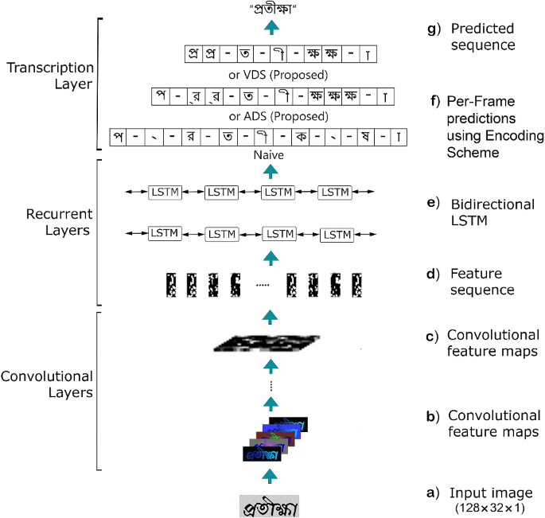
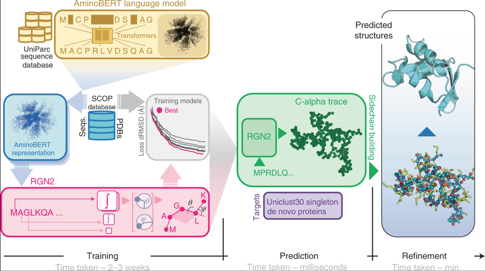
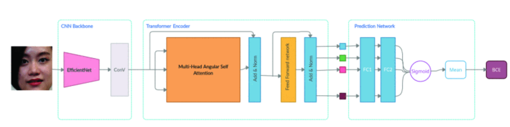
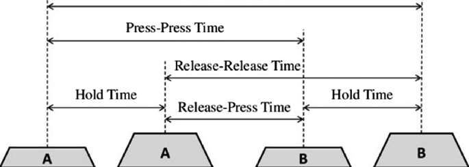
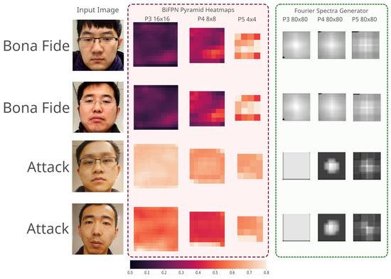
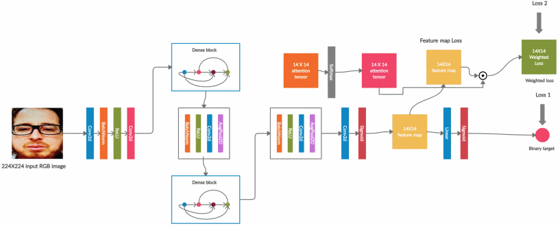
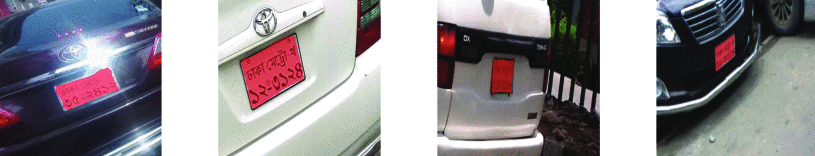
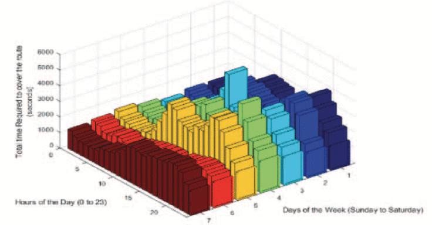

|
Koushik Roy
I'm a computer scientist based in the LA area. Recently, I worked as a software engineer of Edge Computing at a startup named Elementary Robotics.
I completed my Master's degree in Computer Science from Columbia University, with a thesis focused on geometric deep learning applications for genomics, supervised by Mohammed AlQuraishi and Nazim Bouatta.
Prior to my grad school, I have worked on R&D projects related to Optical Character Recognition, Image Segmentation, and Face Spoof Detection under the supervision of Dr. Nabeel Mohammed.
Email /
CV /
Google Scholar /
Twitter /
LinkedIn
|
|
Research
Through my research, I aspire to develop better systems and methodologies to improve software engineering. In particular, I am interested in working at the intersection of software systems and machine learning.
My past research are mostly about computer vision, and nlp. Some papers are highlighted.
|
|

|
A multifaceted evaluation of representation of graphemes for practically effective Bangla OCR
Koushik Roy, M S Hossain, P K Saha, S Rohan, I Ashrafi, I M Rezwan, F Rahman, BM M Hossain, A Kabir, N Mohammed
IJDAR, 2023
manuscript
The paper addresses the challenge of Bangla OCR by proposing two novel grapheme representation methods that enhance the recognition of diverse conjunct characters using a Convolutional Recurrent Neural Network architecture.
|
|

|
Single-sequence protein structure prediction using a language model and deep learning
R Chowdhury*, N Bouatta*, S Biswas*, C Floristean*, A Kharkar, Koushik Roy, C Rochereau, G Ahdritz, J Zhang, G M Church, P K Sorger, M AlQuraishi
Nature Biotechnology, 2022 [IF: 68.16] (featured on the cover of the journal)
manuscript
An end-to-end differentiable recurrent geometric network (RGN2) that uses a protein language model, AminoBERT, to predict protein structures from single sequences without relying on multiple sequence alignments (MSAs). RGN2 outperforms AlphaFold2 and RoseTTAFold on orphan and designed proteins while significantly reducing computation time.
|
|

|
MHASAN: Multi-Head Angular Self Attention Network for Spoof Detection
M Hasan*, Koushik Roy*, L Rupty, M Hossain, S Sengupta, S N Taus, N Mohammed
ICPR, 2022
manuscript
The paper introduces a Modified Multi-Head Angular Self-Attention Network (MHASAN) for face Presentation Attack Detection, achieving competitive results by improving pixel-wise feature extraction through a self-attention mechanism that focuses on angular divergence.
|
|

|
Analysis of Bangla Keyboard Layouts based on Keystroke Dynamics
S Rohan, Koushik Roy, P K Saha, S Hossain, F Rahman, N Mohammed
ICISSC, 2022
manuscript
The paper proposes a quantitative data-driven approach to evaluate Bangla keyboard layouts providing a foundation for further research on keyboard design.
|
|

|
Bi-FPNFAS: Bi-directional feature pyramid network for pixel-wise face anti-spoofing by leveraging fourier spectra
Koushik Roy, M Hasan, L Rupty, M Hossain, S Sengupta, S N Taus, N Mohammed
Sensors, 2021
manuscript
The paper presents a novel face anti-spoofing method using a Bi-directional Feature Pyramid Network, coupled with a self-supervised branch trained on the fourier objective demonstrating strong generalizability across different sensors.
|
|

|
A-DeepPixBis: Attentional Angular Margin for Face Anti-Spoofing
M S Hossain, L Rupty, Koushik Roy, M Hasan, S Sengupta, N Mohammed
DICTA, 2021
manuscript
This paper presents a modified binary cross entropy loss with an angular margin for training the DeepPixBis model in face anti-spoofing.
|
|

|
An analytical approach for enhancing the automatic detection and recognition of skewed bangla license plates
Koushik Roy, A M S Khan, M Ali, S R Simanto, N Mohammed, M Atick, S Islam, M Islam
ICBSLP, 2019
manuscript
The paper proposes an analytical approach that enhances automatic license plate recognition (ALPR) systems for both normal and skewed plates. Applies image segmentation and transformation algorithms to modify the number plate into optimal formats for the recognition pipeline.
|
|

|
A Traffic Jam Prediction Model for Dynamic Routes Using Global Positioning Systems Data from Vehicles at Different Times of the Day
Koushik Roy, A A Iman, N Islam, A Firoze
SCIS, 2018
manuscript
The paper presents a analytical approach for predicting traffic-related information by analyzing GPS data from 700 vehicles, providing insights on traffic jams, travel times, and speeds for route segments, and highlighting a city's reduced nighttime traffic activity.
|
Teaching
|
| TA, CSEE4121: Computer Systems for Data Science (Spring 2022) for Asaf Cidon, Columbia University |
| TA, COMS4995: Applied Deep Learning (Fall 2022) for Josh Gordon, Columbia University |
|
{kind=link}